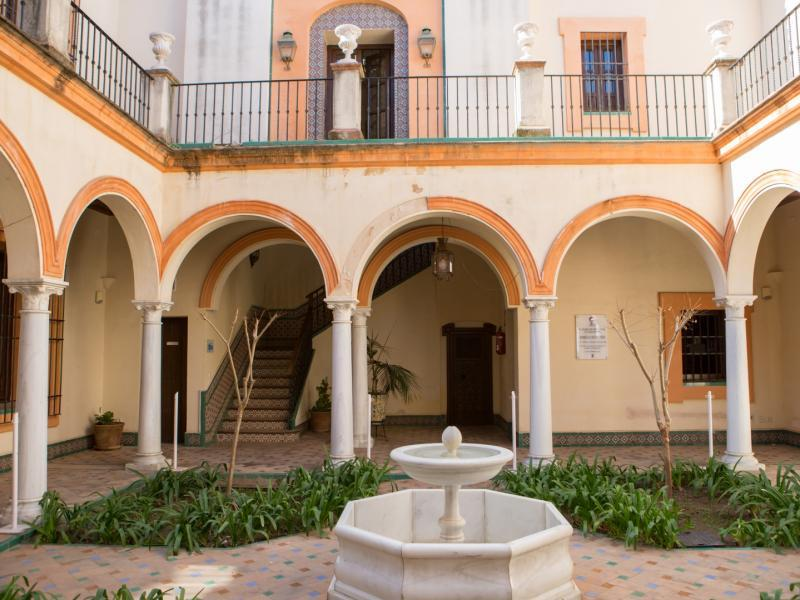
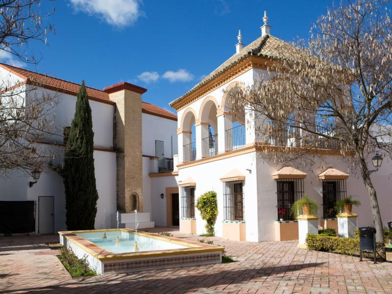

Espartinas



-
ODS 11: Ciudades y comunidades sostenibles
El principal problema con esta ODS se debe a que en Espartinas esl transporte publico es bastante malo, y no hay combinaciones de Autobuses para facilitar el transporte.
Esto proboca que la mayoria de personas a la hora de desplazarse tengan que desplazarse en coche lo que fomenta la contaminacion, por lo que seria necesario mejorar el trnasporte publico o facilitar los desplazamientos a pie o bicicleta -
ODS 13: Accion por el clima